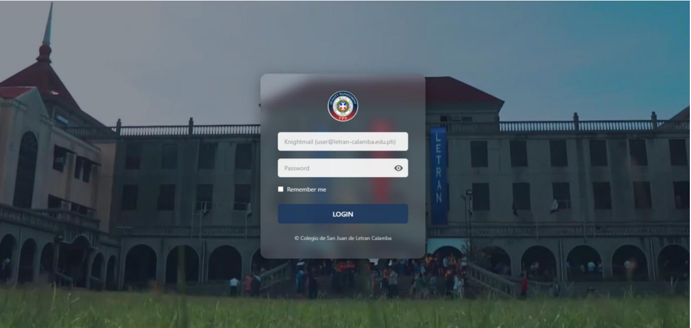
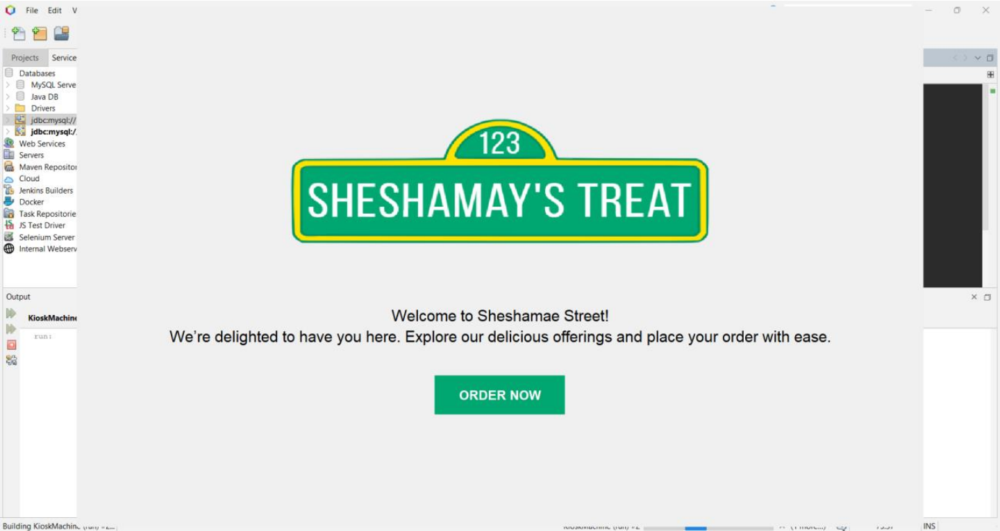
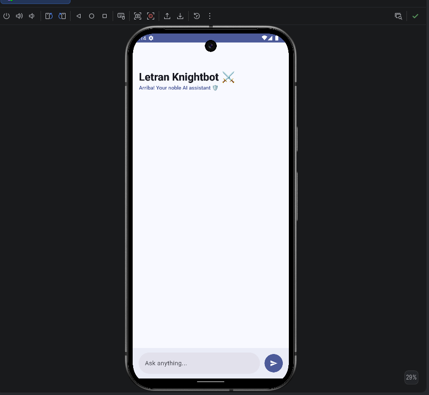

Builds
Featured Projects

Maritime Vessel Inventory System
April 2026
The Maritime Vessel Inventory System (MVIS) is a comprehensive inventory and maintenance management system developed during my internship at the Philippine National Police (PNP) Maritime Group. The system was designed to monitor and manage vessel parts, equipment, and Preventive Maintenance Services (PMS) across maritime units and regional offices nationwide.
MVIS centralizes inventory records, streamlines asset tracking, and monitors maintenance schedules and repair activities to ensure operational readiness. The system provides accurate reporting and real-time visibility of vessel resources, enabling more efficient asset management, maintenance planning, and decision-making throughout the organization.
Through this project, I gained valuable experience in full-stack web development, database design, system analysis, and the development of enterprise-level solutions that support large-scale operational processes.
PRS Memo Tracking System
March 2026
The PRS Memo Tracking System is a web-based document management and tracking solution developed for the Philippine National Police (PNP) Maritime Group. The system was designed to streamline the distribution, monitoring, and management of internal memoranda across departments and offices.
By centralizing memo records and automating tracking processes, the system improves document visibility, enhances information accuracy, and enables efficient monitoring of memo status throughout its lifecycle. It helps reduce delays in communication, supports better workflow management, and ensures that important documents are properly tracked and accessible when needed.
Through this project, I strengthened my skills in full-stack web development, database management, system design, and the development of solutions that improve organizational efficiency and document control processes.

AI-Driven Web-Based Transaction Processing System for ISO Documentation with Automated Content Evaluation and Redundancy Detection in Letran Calamba
Dec 2025
This capstone project is a web-based transaction processing system designed to automate ISO 21001:2025 documentation workflows at Colegio de San Juan de Letran Calamba. The system streamlines document management processes by integrating role-based access control, secure electronic signatures, and AI-powered content evaluation features.
The platform utilizes artificial intelligence to analyze document content, identify redundancies, and support compliance with ISO standards, helping improve document quality, consistency, and audit readiness. By digitizing and automating documentation workflows, the system enhances operational efficiency, reduces manual processing, and supports effective quality management practices across the institution.
Through this project, I applied my skills in full-stack web development, database design, system analysis, artificial intelligence integration, and software engineering to develop a solution that addresses real-world organizational and compliance challenges.

KIOSK Machine Project
Dec 2024
The KIOSK Machine Project is an interactive self-service food ordering application developed using Java Swing and MySQL. The system was designed to provide customers with a convenient and efficient way to browse menu items, place orders, and complete transactions through an intuitive graphical user interface.
The application integrates a database-driven architecture to manage menu information, customer orders, and transaction records, ensuring accurate and reliable data processing. By automating the ordering process, the system improves operational efficiency, reduces manual errors, and enhances the overall user experience.
Through this project, I strengthened my skills in Java application development, graphical user interface (GUI) design, database management, and the implementation of transaction processing systems.

AI Chatbot App
Sept 2023
The AI Chatbot App is an Android-based conversational application developed using Android Studio. It is integrated with the OpenAI GPT-4 API to deliver intelligent, context-aware, and human-like responses in real time.
The application features a mobile-friendly interface that enables smooth user interaction and supports natural language processing (NLP) capabilities for answering queries, assisting users, and generating dynamic conversational outputs. By leveraging artificial intelligence, the chatbot enhances user engagement and provides instant, relevant responses to various inputs.
Through this project, I gained hands-on experience in Android development, API integration, natural language processing, and building AI-powered mobile applications.